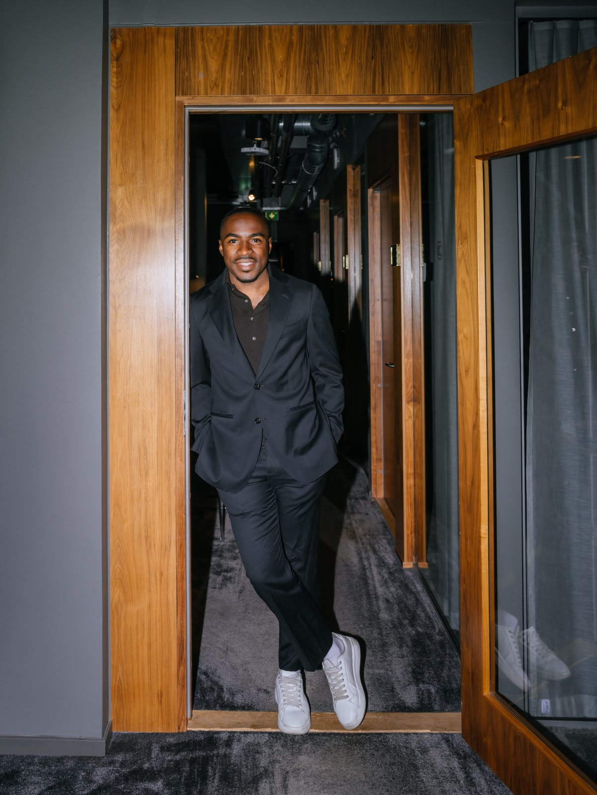
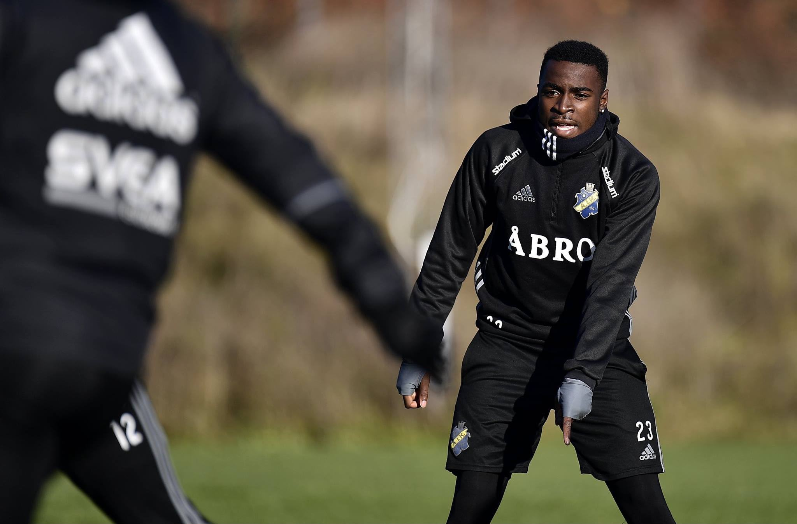
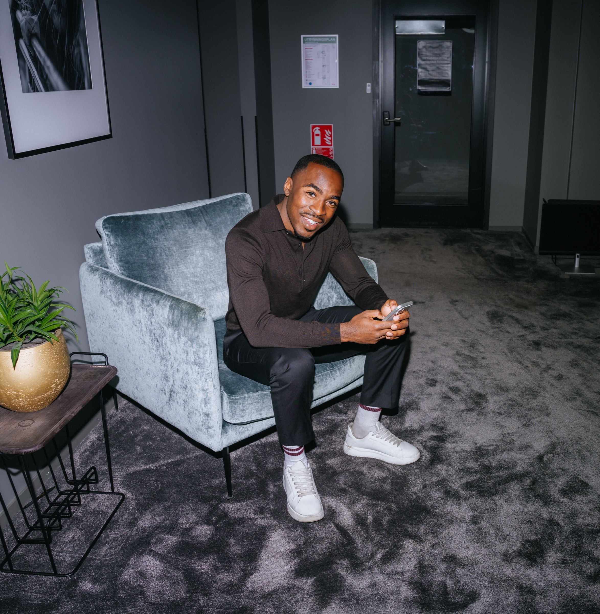
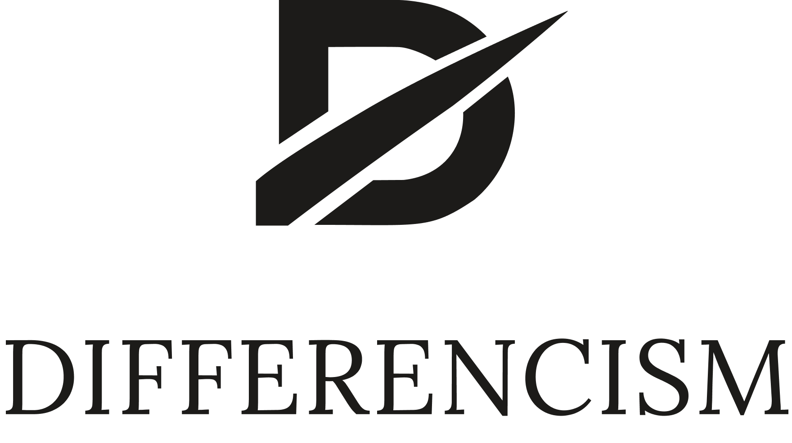
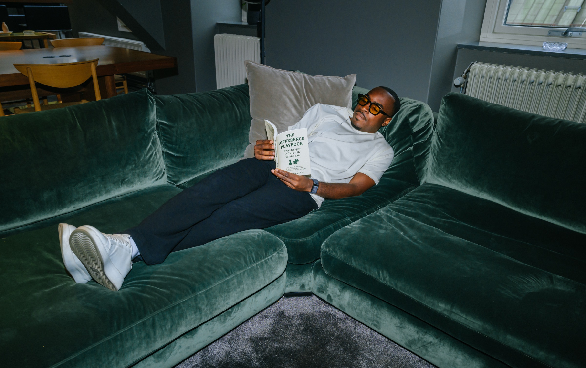

Rickson Mansiamina
Grundare av Differencismen.
Riktningsvägledare.
Jag arbetar mellan människan och prestationen.
Där prestation möter självbild. Där känslan möter ansvar. Där människan behöver kunna leda sig själv genom det som händer.
Det är en plats jag inte bara har studerat. Jag har levt i den.
Elitfotboll · U19-landslag · Kognitiv beteendeterapeut · Psykologiskt kapital · Mental coach

Jag lärde mig prestera.
Långt innan jag lärde mig leda mig själv.
Fotbollen formade en stor del av mitt liv. Den tog mig genom elitmiljöer, spel i Sverige och Finland och landskamper med Sveriges U19-landslag.
Jag lärde mig konkurrensen, uttagningarna och förväntningarna. Att bli vald. Att inte bli vald. Att prestera när människor tittar.
Fotbollen gav mig mycket. Men någonstans på vägen blev gränsen mellan Rickson och fotbollsspelaren Rickson för tunn.
Prestationen var inte längre bara något jag gjorde. Den hade börjat bära för mycket av vem jag var.

När prestationen inte längre gav mig svaret.
När fotbollen förändrades förändrades mer än min vardag. En identitet jag byggt under många år började skaka.
Samtidigt förändrades andra delar av livet. Sådant jag hade lutat mig mot försvann eller såg plötsligt annorlunda ut.
Jag kunde inte prestera mig ur det. Jag behövde möta mig själv utan rollen.
Vad är sant här? Vad är mitt ansvar? Vad kan jag påverka? Vad behöver jag från mig själv nu?
Jag fick inget stort svar.
Jag fick ett arbete.
Jag behövde bygga något som höll.
Jag började förstå skillnaden mellan att kontrollera verkligheten och att kunna leda mig själv genom den. Mellan att reagera och att välja vad jag gör därefter. Mellan vem jag är och det jag presterar.
Sanning. Perspektiv. Riktning. Beteende.
Nästa rätta steg. Sedan ett till.
Det fanns ingen färdig filosofi. Det som senare skulle få ett språk började först som ett sätt att bygga mig själv.

Erfarenheten gav mig frågorna.
Kunskapen gav mig fler perspektiv. Verkligheten fick pröva dem.
Min egen resa väckte ett behov av att förstå mer. Jag utbildade mig till kognitiv beteendeterapeut, vidare inom psykologiskt kapital och till mental coach.
Men kunskapen skulle inte stanna i teorin. När arbetet började möta andra människor såg jag hur olika situationer kunde bära liknande mänskliga mönster.
Jag behövde inte ge människor min väg. Jag behövde bli bättre på att hjälpa dem hitta och bära sin egen.
Det som fungerade behövde gå att pröva igen. Det som bara lät bra behövde bort.
Erfarenheten hade gett mig frågorna. Kunskapen hade gett mig fler perspektiv. Verkligheten började lämna kvitton.
Arbetet fick ett språk. Språket fick en struktur. Och det som en gång började som ett sätt att bygga mig själv började bli något större.

Differencismen.
Jag behövde ett namn på rollen.
Riktningsvägledare.
Min plats finns i mellanrummet. Mellan prestationen och människan som ska bära den. Mellan det som händer och det människan gör det till. Mellan förståelsen och beteendet som blir synligt.
Jag ersätter inte tränaren, agenten eller sportchefen. Jag äger en annan del av arbetet.
Min uppgift är inte att leda människor åt dem. Min uppgift är att göra dem bättre på att leda sig själva.
Fotbollen finns fortfarande kvar.
Jag står inte utanför miljön jag arbetar med. Jag spelar fortfarande. Skillnaden är vad spelet behöver bära.
Förr kunde prestationen få avgöra för mycket av hur jag såg på mig själv. Idag får fotbollen vara en del av mitt liv utan att behöva vara hela min identitet.
Jag behöver inte prestera för att veta vem jag är. Det gör mig friare att prestera.
Jag är fortfarande mitt i bygget. Det är också meningen.

Fotbollen är min spets.
Människan är grunden.
Jag vet vad som händer när prestationen får bära för mycket av människan bakom. Det är därför jag gör det här.
Jag tror inte på att bygga människor runt en prestation. Jag tror på att bygga människan som ska kunna bära prestationen.
LED DIG SJÄLV. FÖRST.